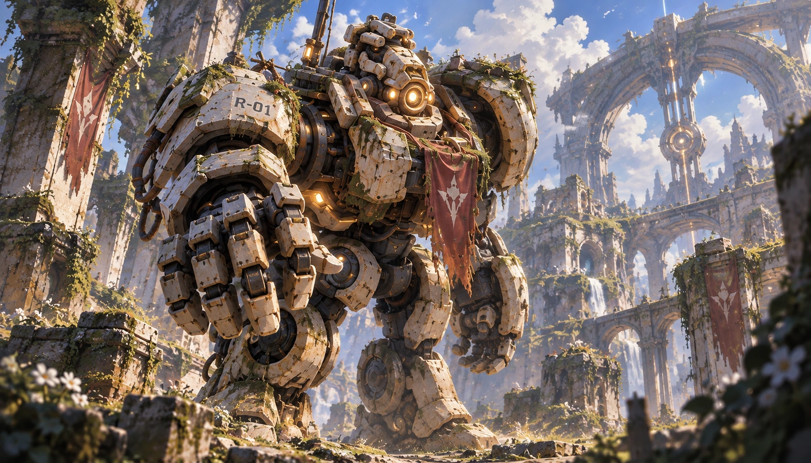

Passive
Charger
Nearby allied or enemy Fluxborn deaths generate Charge.
Maximum Charge scales with champion level.
Jungle wildlife does not generate Charge.

Relay was not built for war. R-01 was an ancient Conductor, a mobile power/maintenance machine used during the network-construction era.
Buried during the First Fracture, Relay was eventually uncovered and reactivated. His surviving directive is effectively: restore network.
Relay is intelligent, literal, and nurturing rather than a dumb comedy robot.
Large — machine-scale, well above human height, standing among ruins of roughly his own size. The earlier “roughly 3.8m” stays withdrawn: the art shows something clearly bigger. Corrected 2026-09-21: my replacement wording, “he towers over the ruins around him”, was also an over-read — the arches beside him reach his head and the towers behind him are taller. His art carries no reliable scale reference at all: no figure, no doorway, no standard object, and foreground flowers that are close to the lens rather than large. “Large” is as far as this image can be read, and that is enough (see Scale is not the bible's to fix below).
A colossal machine of blocky bone-white slab plating over dark exposed mechanism, top-heavy and forward-leaning, towering over the ruins around him. The stencilled unit marking R-01 is still legible on his shoulder plate. A single large ringed amber optic is set into his head, with smaller amber points at the chest and hand. His arms are enormous segmented manipulators ending in heavy articulated hands built for lifting and carrying, and a slender antenna mast rises from his back. Moss and green growth have colonised him — shoulders, joint housings, forearms and thighs — and a faded crimson expedition banner bearing a pale sigil is still tied to him; someone else left it there and he kept it. He is a maintenance and power machine that outlived the war around him, and the growth on him is old. The hands are manipulators and the mast is an antenna, never weapons; he carries no armament of any kind, and the moss is colonisation, not battle damage.
Nearby allied or enemy Fluxborn deaths generate Charge.
Maximum Charge scales with champion level.
Jungle wildlife does not generate Charge.
Target self or ally.
Spend a percentage of current Charge to grant a finite number of Overclocked Attacks, increasing attack speed until the empowered attacks are consumed.
For a short duration, Fluxborn deaths generate increased Charge.
Deploy a field.
Allies inside gain slow resistance.
Enemy dashes/displacements inside the field bend or drag slightly toward its center.
Relay anchors and creates a temporary power network while current Charge drains.
Connected allies gain combat utility; allied basic attacks can reduce the cooldown of their next basic ability slightly.
Allied Fluxborn inside the network are overclocked with movement/attack-speed benefits.
Docs/Design/Vanguards/04-relay.yaml.
Narrative and abilities: Veyra_Initial_Roster_Character_Bible_v0.6.md §4.
Generated 2026-09-20 by render_sheet.py.